ùî∏ùïõùï†ùï¶ùï•ùïñùï´ du caract√®re √† ùïßùï†ùï•ùï£ùïñ site üöÄ
C'est quoi une police de caractères ?
Ensemble de glyphes ... de même style, corps et graisse
C'est quoi un glyphe ?
Un petit symbole dessiné qui représente une lettre, une ponctuation ou autre.
Dans le monde numérique...
Fichier regroupants des formes vectorielles
2 principaux formats
TrueType
OpenType
WOFF2 pour le web
- Format compress√© üóú
- Compatible avec TrueType & OpenType
Typeface: Arizona (Dinamo)
Johan Rouve x Comet Meetings
@JohanRouve
Structure
| name | infos nom, style, designer, ... |
| glyf | nom, contour, points |
| cmap | ascii code -> glyph index |
| ... total de 50 tables dans la spec Opentype | |
Exemple glyf
Composition
- Homogeneité
- Maintenabilité
Composition à l'extreme
Sixtyfour
a â à e é ë ê
B C D F G H I
Ligature

JetBrains Mono
Ligatures contextuelles
== != =/= <= >= <>
<== <=> ==>
*** ?= <$> <$ $> @_
|> <| ||> <|| |||> <|||
Ligatures standards
fi, fl, ff, ffi, ffl, fb, ffb, fj, ffj, fk, ffk, ft, fft
Ligatures spécifiques
Glyphs
Ligatures en CSS
Ligatures standards
actif par défaut
.enable-liga {
font-variant-ligatures: common-ligatures;
}
.disable-liga {
font-variant-ligatures: no-common-ligatures;
}Ligatures contextuelles
actif par défaut
.enable-liga {
font-variant-ligatures: contextual;
}
.disable-liga {
font-variant-ligatures: no-contextual;
}Ligatures spécifique
inactif par défaut
.enable-liga {
font-variant-ligatures: discretionary-ligatures;
}
.disable-liga {
font-variant-ligatures: no-discretionary-ligatures;
}Caracteres alternatifs
Montserrat
Alternative stylistique
a e é f l t w y z
A E É F G I J M N Q T U W Y Z
.enable-salt {
font-feature-settings: "salt";
}
Arizona
Ensemble stylistique
a
->
a
font-feature-settings: "ss01";a
->
a
font-feature-settings: "ss02";g
->
g
font-feature-settings: "ss03";Q g &
->
Q g &
font-feature-settings: "ss04";14
->
14
font-feature-settings: "ss05";“X”
->
“X”
font-feature-settings: "ss06";La quête de l'esperluette
Johan & Custom
Couleurs
Bradley Initials DJR
D
D
D
@font-face {
font-family: 'Bradley Initials DJR';
src: url('./BradleyInitialsDJR-Regular.woff2');
}
@font-palette-values --font-palette-bumble-bee {
font-family: 'Bradley Initials DJR';
base-palette: 3;
}
@font-palette-values --custom-palette {
font-family: 'Bradley Initials DJR';
base-palette: 1;
override-colors:
0 #FFE424,
1 #FFFFFF;
}
body {
font-family: "Bradley Initials DJR";
font-palette: --custom-palette;
}
Il y a quelque chose de different
Il y a quelque chose de different
Arizona (Dinamo)
Variable font for the win !
Serif
Weight
Italic
Axe de variation

Muybridge
Animation
üêé
Anicons Color
Animation
G t a 5
Benefices
- Gain de chargement
- Possibilité d'animation
- Infinité de variations